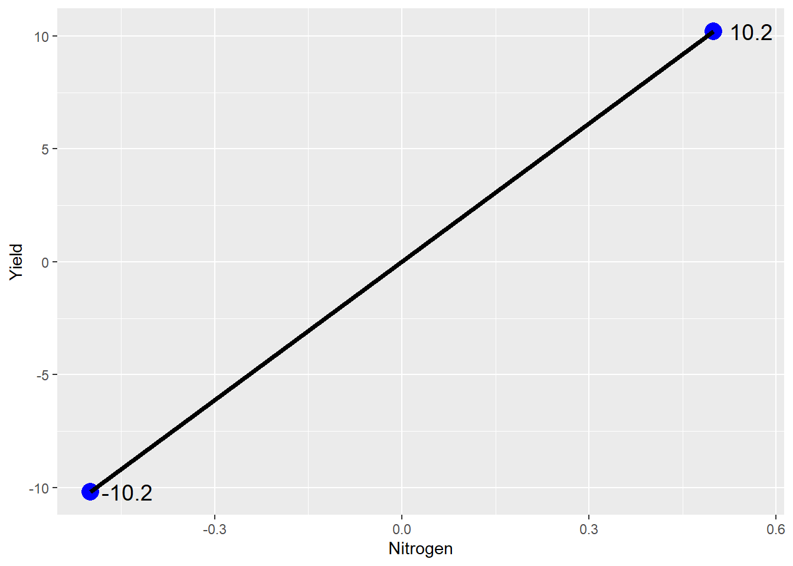
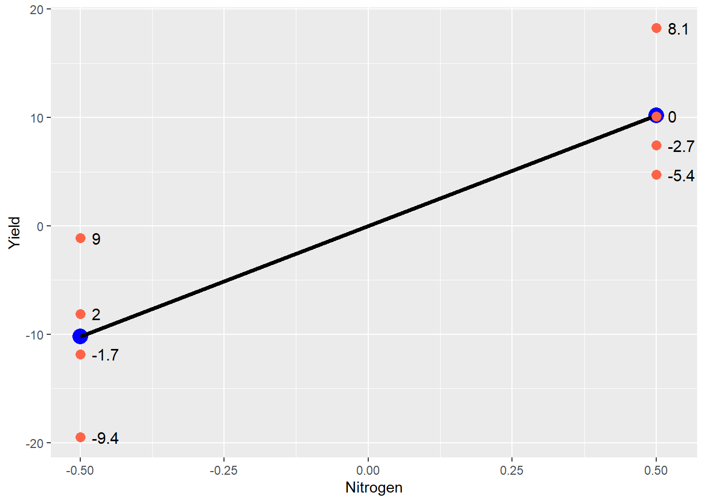
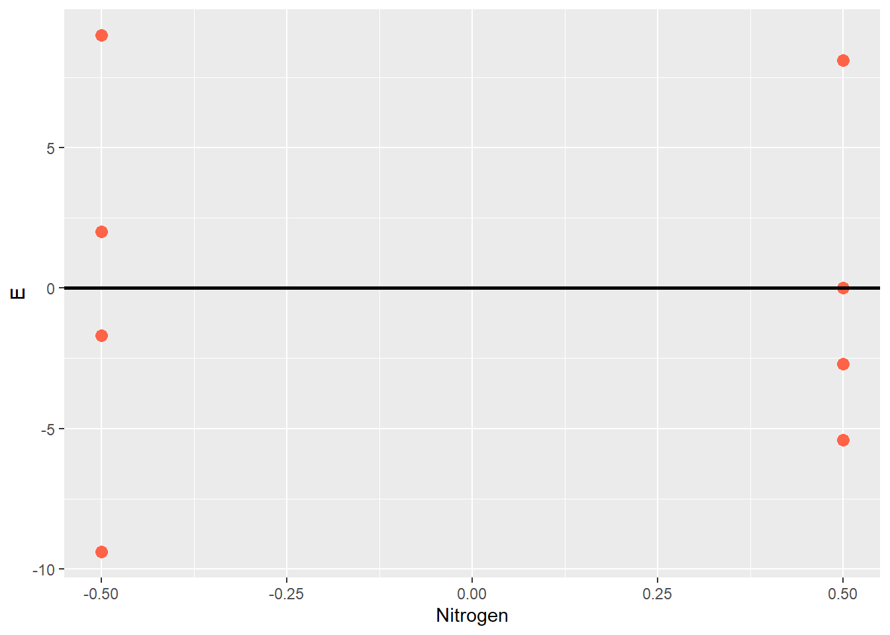
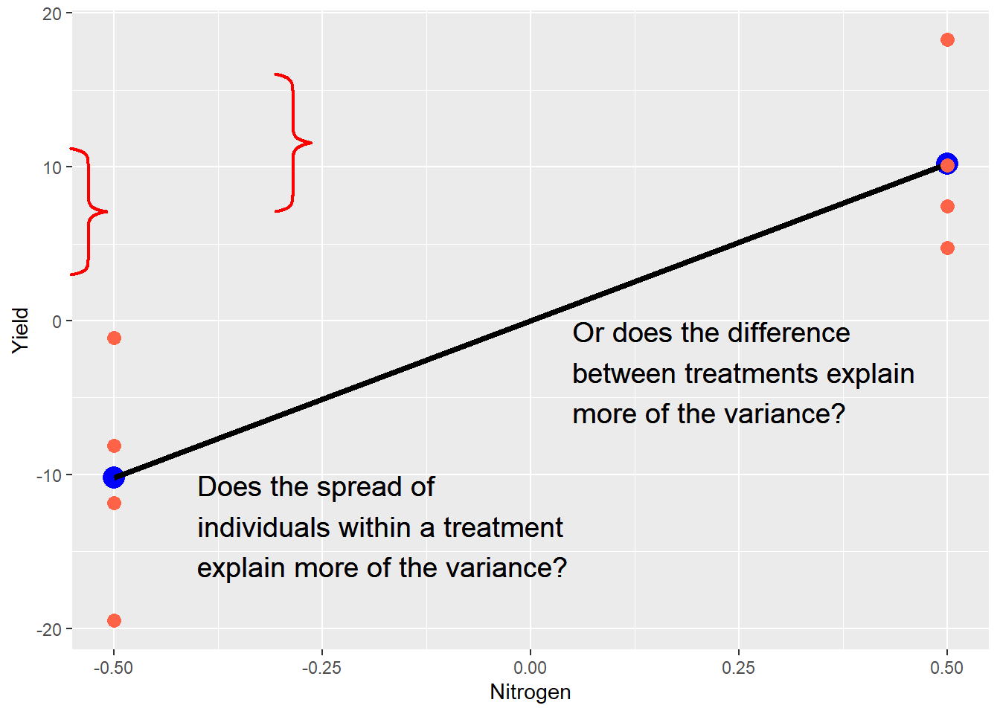
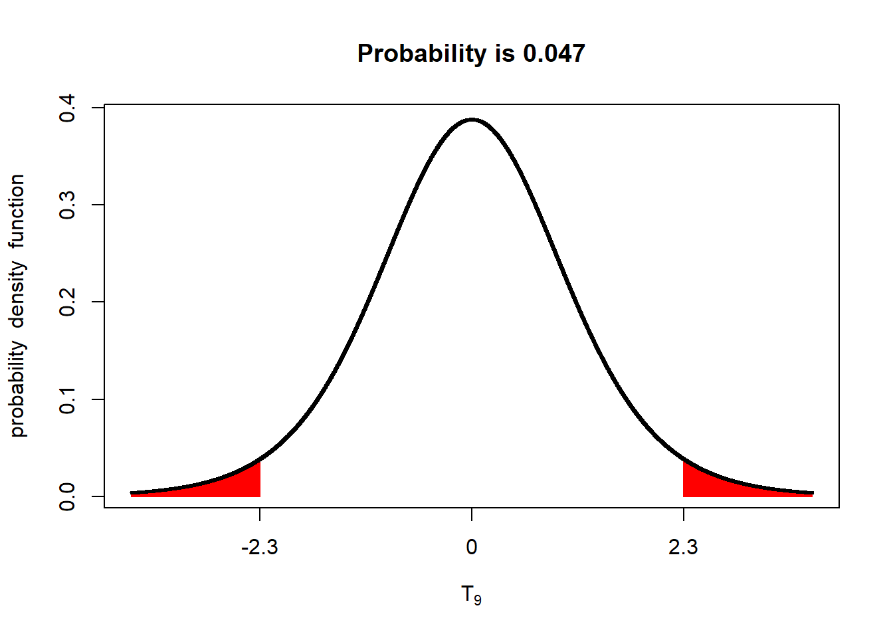
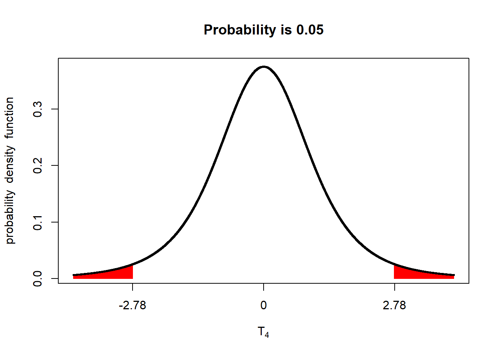
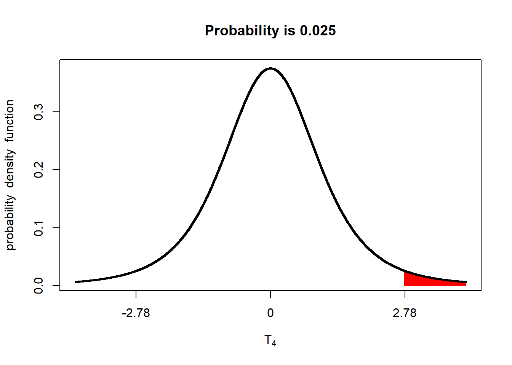
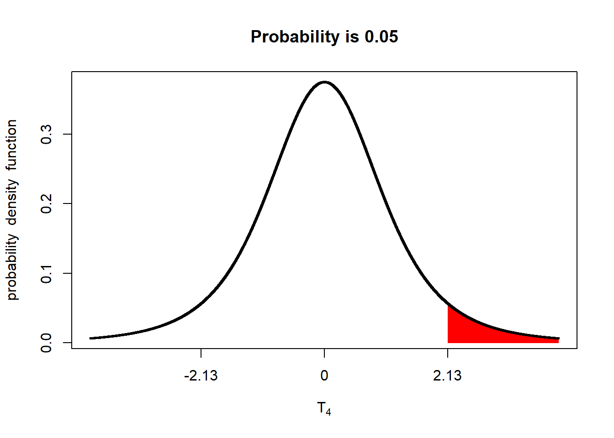

Chapter 5 Understanding Statistical Tests
In the last unit, we introduced the concept of statistical testing and, although I endeavor to make this course as practical and painless as possible, I believe it worthwhile to spend a unit on some of the theory of statistical testing. This will help reinforce what we have learned so far in this course, and prepare us for the other statistical tests that lie ahead. Otherwise, it is easy to become ambiguous about what we are really testing, and unclear in reporting our results.
In the last unit, we discussed experimental design and quickly jumped into data analysis. This unit, we will walk through the thought processes that surround our trial, including: - identifying our research question - creating a model from our question - identifying the hypotheses our data will be used to test - recognizing that we can mistakingly accept or reject these hypotheses - understanding how the confidence interval and p-value describe our measured difference - incorporating pre-existing knowledge into our hypotheses and tests
This list seems intimidating, but we will take our time and break these down into as much plain language as statistics will allow.
5.1 Research Question
As I have likely said before in this course, the first think you must have to design an experiment is a clear, testable research question. The question should be answerable using quantitative data and specific about what those data will measure. Here are some examples of bad and good questions:
Bad: Is this fertilizer better than another?
Good: Does corn treated with 6-24-6 fertilizer at planting differ in yield from corn that is not treated with an in-furrow starter.
Bad: Is the winter wheat variety MH666 (“the Beast”) different than variety MH007 (“the Bond”)?
Good: Does variety MH666 differ in test weight from variety MH007 ?
Bad: Does herbicide deposition agent “Stick-It!” perform differently than agent “Get-Down!” ?
Good: Do “Stick-It!” and “Get-Down!” differ in the number of live weeds two weeks after their application with glyphosate?
Remember to be clear about what we are measuring. Otherwise, it is unclear whether we are testing fertilizer affects on corn yield or moisture at harvest. We don’t know whether we are comparing winter wheat yield or head scab. We don’t know whether we are measuring the effect of our deposition agent on weed survival or crop injury.
5.2 The Model
The word “model” probably makes you shudder and think of a crowded blackboard filled with mathematical equations.
Yes, models can be quite complex. All of you have worked with models, however, and most of you should recall this one:
\[ y = b + mx \] Where \(y\) is the vertical coordinate of a point on a graph, \(x\) is its horizontal coordinate, and \(b\) is the Y-intercept (where the line crosses the y-axis). The most interesting variable is often \(m\), the slope. The slope is the unit increase in y with each unit increase in x.
Suppose we took a field of corn and conducted a side-by-side trial where half of the plots were sidedressed with 150 lbs treated with an N stabilizer. The other half were sidedressed with 150 lbs actual N plus 1 unit of nitrogen stabilizer. The mean yield of plots treated with N plus nitrogen stabilizer was 195 bu and the mean yield of plots treated with N alone was 175 bu. How could we express this with a slope equation?
First, let’s state this as a table. We will express the N stabilizer quantitatively. The “No Stabilizer” treatment included zero units of N stabilizer. The “Stabilizer” treatment received 1 unit of stabilizer.
library(tidyverse)
set.seed(1776)
`No Stabilizer` = rnorm(4, mean=175, sd = 5)
`Stabilizer` = rnorm(4, mean = 195, sd=5)
original_data = cbind(`No Stabilizer`, `Stabilizer`) %>%
as.data.frame()
means_table = original_data %>%
gather(Treatment, Yield) %>%
group_by(Treatment) %>%
summarise(Yield = mean(Yield)) %>%
ungroup() %>%
mutate(Yield = round(Yield, 1)) %>%
mutate(Nitrogen = c(0,1)) %>%
select(Treatment, Nitrogen, Yield) %>%
column_to_rownames(var = "Treatment")
mean_yield = mean(means_table$Yield)
means_table## Nitrogen Yield
## No Stabilizer 0 177.7
## Stabilizer 1 198.0# yield = c(175, 195, 185)
# nitrogen = c(0, 1, 0.5)
# original_data = cbind(nitrogen, yield) %>%
# as.data.frame()
# rownames(original_data) = c("No Stabilizer", "Stabilizer", "Mean")
#
# original_dataIn creating this table, we also calculated the mean stabilizer rate and corn yield across all plots. These are are population means for the field.
Now, let’s express the stabilizer rate and yield little differently, this time by their differences from their population mean. In half of the plots, the N stabilizer rate was 0.5 less than the population mean of 187.9; in the other half, the rate was 0.5 greater. Similarly, the yield in half of the plots was about 10 bushels less than the population mean of 188.9; in the other half of the plots, it was 10 bushels greater. Our table now looks like this:
centered_data = means_table %>%
scale(scale = FALSE) %>%
as.data.frame() %>%
mutate(Yield = round(Yield, 1))
centered_data## Nitrogen Yield
## No Stabilizer -0.5 -10.2
## Stabilizer 0.5 10.2#
# yield = c(-10, 10, 0)
# nitrogen = c(-0.5, 0.5, 0)
# centered_data = cbind(nitrogen, yield) %>%
# as.data.frame()
# rownames(centered_data) = c("No Stabilizer", "Stabilizer", "Mean")
#
# centered_dataWhat we have just done is a statistical process called center scaling. Centering expresses measures by their distance from the population mean, instead of as absolute values.
Now let’s plot this out using our line equation. \(y\) equals yield. \(x\) equals nitrogen rate. \(b\) equals the mean yield, the y-intercept, which is zero in our centered data.
library(ggpubr)
means_plot = centered_data %>%
ggplot(aes(x = Nitrogen, y=Yield)) +
geom_point(color="blue", size =5) +
geom_line(size = 1.5)
means_plot +
geom_text(aes(x = Nitrogen + 0.06, y = Yield, label = Yield), size = 5)
Ta da: our line plot. If we were to write this as a linear equation, it would be:
\[ Yield = 0 + 20*Stabilizer\] Thus, as the N stabilizer rate increase from 0 (no stabilizer) to 1 (stabilizer), yield increases 20 bushels.
5.2.1 Treatment Effect
Another way of expressing the effect of the treatment levels is in terms of their distance from the mean yield across all plots. Where sidedressed with nitrogen alone, our mean yield is equal to the population mean minus 10. Conversely, where we sidedressed with nitrogen plus stabilizer, our yield is the population mean plus 10.2. We can express these treatment effects as:
\[Unstabilized : T_0 = -10.2\] \[Stabilized: T_1 = +10.2\]
Our mean yield when corn is sidedressed with N without stabilizer is then equal to the mean yield across all plots plus the treatment effect:
\[Unstabilized: Y_0 = \mu + T_0 \] \[Stabilized: Y_1 = \mu + T_1 \]
We can prove this to ourselves by plugging in the actual yields for \(Y\) and \(\mu\) and the actual treatment effects for \(T_0\) and \(T_1\): \[ Unstabilized: 175 = 185 + (-10.2) \] \[Stabilized: Y_1 = 185 + (+10.2) \]
5.2.2 Error Effect
The treatment effect is known as a fixed effect: we assume it will be consistent across all plots within our trial. That said, will every plot that receives nitrogen plus stabilizer will yield 195 bushels? Will every field sidedressed with nitrogen without stabilizer yield 175?
Of course not. Any yield map will show variation in yield within a field, even when the entire field has been managed uniformly. Differences in soil texture and microclimates, inconsistencies in field operations, and inaccuracies in measuring equipment contribute to variations in the values recorded recorded. These variations will also add to or subtract from the mean yield across all plots.
We can visualize this in the plot below.
centered_original_data_by_trt = original_data %>%
gather(Nitrogen, Yield) %>%
mutate(Nitrogen = gsub("No Stabilizer", -0.5, Nitrogen)) %>%
mutate(Nitrogen = gsub("Stabilizer", 0.5, Nitrogen)) %>%
mutate(mu = mean(Yield)) %>%
group_by(Nitrogen) %>%
mutate(T = mean(Yield) - mu) %>%
ungroup() %>%
mutate(E = Yield - T - mu) %>%
mutate(Effect = T + E) %>%
mutate(Nitrogen = as.numeric(Nitrogen)) %>%
mutate(E = round(E,1))
means_plot + geom_point(data = centered_original_data_by_trt, aes(x = Nitrogen, y=Effect, label=E), size=3, color="tomato") +
geom_text(data = centered_original_data_by_trt, aes(x = Nitrogen+0.02, y = Effect, label = E), hjust = 0, size = 4)## Warning: Ignoring unknown aesthetics: label
The blue points still represent the treatment mean, and the black line represents the difference between treatments. The red points are the original data – note how they are distributed around each treatment mean. Any individual observation is going to add to or subtract from its treatment mean. The value which each point adds to the treatment mean is show to the right of the point. This is the error effect for that observation.
Sometimes it is easier to view the experimental unit effect another way, by excluding the treatment effect so that just the effects are plotted around their mean of zero:
centered_original_data_by_trt %>%
ggplot(aes(x = Nitrogen, y=E)) +
geom_point(size = 3, color="tomato") +
geom_hline(aes(yintercept = 0), size=1)
This kind of plot is often called a residual plot, because the error can be thought of as the unexplained, leftover (ie “residue”) effect after the population mean and and treatment effects are accounted for. When a correct model is fit to the data, about half the observations for each treatment should be greater than zero, and half below zero. The residual plot is a valuable tool to inspect and verify this assumption.
The yield observed in each plot, then, will be the sum of three values: - the mean yield across all plots - the effect of the treatment applied to that plot - the combined effect of environment, field operations, and measurements
This model can be expressed as:
\[ Y_{ij} = \mu + T_i + \epsilon_{ij} \]
Where: - \(Y_{ij}\) is the yield of the \(i^{th}\) treatment level in the \(j^{th}\) block - \(\mu\) is the yield mean across all plots - \(T_i\) is the effect of the \(i^{th}\) level of stabilizer - \(\epsilon_{ij}\) is the random effect associated with the plot in the \(j^{th}\) block that received the \(i^{th}\) level of stabilizer
For example, a plot in the 3rd block that received nitrogen treated with stabilizer (\(T_1\)) would be indicated by the equation:
\[ Y_{13} = \mu + T_1 + \epsilon_{13} \]
If the error for this plot, \(\epsilon_{13}\), was -2, the observed yield would be:
\[ Y_{13} = 185 + 10 -2 = 193 \]
Why bother with the linear model when we simply want to know if one treatment yields more than the other? There are two reasons. First, although in agriculture we often think of field trials as testing differences, what we are really doing is using the data from those trials to predict future differences. In my opinion, this is one of the key differences betweeen classical statistics and data science. Classical statistics describes what haas happened in the past. Data science predicts what will happen in the future.
The linear model above is exactly how we would use data from this trial to predict yields if the product is used under similar conditions. Adding the stabilizer to nitrogen during sidedress will increase the mean yield for a field by 10 bushels. But any given point in that field will have a yield that is also determined by the random effects that our model cannot predict: soil and microclimate, equipment, and measurement errors.
Second, the linear model illustrates what statistics will test for us. Ultimately, every statistical test is a comparison between fixed and random effects: what explains the differences in our observations more: the fixed effects (our treatment) or random effects (error)? In our current example, we can visualize this as follows:
centered_original_data = original_data %>%
gather(Nitrogen, Yield) %>%
mutate(Nitrogen = gsub("No Stabilizer", -0.5, Nitrogen)) %>%
mutate(Nitrogen = gsub("Stabilizer", 0.5, Nitrogen)) %>%
mutate(Yield = Yield - mean(Yield)) %>%
mutate(Nitrogen = as.numeric(Nitrogen))
library(ggpubr)
library(pBrackets)## Warning: package 'pBrackets' was built under R version 4.0.5library(grid)
means_plot + geom_point(data = centered_original_data, aes(x = Nitrogen, y=Yield), size=3, color="tomato") +
geom_text(aes(x=-0.40, y=-10), label="Does the spread of\nindividuals within a treatment\nexplain more of the variance?",
hjust=0, vjust=1, size=5) +
geom_text(aes(x=0.05, y=0), label="Or does the difference\nbetween treatments explain\nmore of the variance?",
hjust=0, vjust=1, size=5)
grid.locator(unit="native")
grid.brackets(95, 200, 95, 370, h=0.05, lwd=2, col="red")
grid.brackets(370, 100, 370, 285, h=0.05, lwd=2, col="red")
The purpose of a trial is to measure both types of effects and render a verdict. Which is hypotheses are important, as we will now see.
5.3 Hypotheses
Before we design any experiment, however, we have to define our research question. In the case of a side-by-side trial, the question is generally: “Is one treatments better than the other? This question then needs to be translated into hypotheses.
Outside of statistics, a hypothesis is often described as “an educated guess.” Experiments are designed, however, to test two or more hypotheses. We may casually describe a side-by-side trial as comparing two treatments, but the data are formally used as evidence to test two, opposing hypotheses:
- Ho: The difference between the two treatments is zero.
- Ha: The difference between the two treatments is not zero.
The first hypothesis, Ho, is called the null hypothesis. The second hypothesis, Ha, is the alternative hypothesis. Typically, we tend to focus our effort on gathering enough evidence to support the alternative hypothesis: after all this work, we typically want to see a treatment difference! But we need to remember the null hypothesis may also be supported.
This process, like the linear model ahead, probably seems overly-formal at first. But like the linear model, it helps us to understand what statistics really tell us. We cannot prove either of these hypotheses. The world is full of one-off exceptions that will prevent either hypothesis from being universal truths. Our science is about comparing the evidence for each hypothesis, and selecting the hypothesis that is probable enough to meet our standards.
To illustrate this, look no further than the t-test we used in the last unit:
\[ t = \frac{\bar{x}-\mu}{SED} \]
Recall that \(\bar{x}\) was our treatment difference, \(\mu\) was the hypothesized treatment difference (zero), and \(SED\) was the standard error of the difference. The numerator is our treatment effect on plot yield. The denominator quantifes the random effects on plot yield. As this ratio increases, so does t. As t increases, the probability that the true population difference is zero decreases.
Another nuance of hypotheses is this, especially when it comes to the alternative hypothesis. If the evidence fails to support the alternative hypothesis, that does not mean it is wrong. The fixed (treatment) effect we observed was real. But the random effect was so great we could not rule out the differences we observed were the result of chance.
Simply put, our confidence interval was too big to rule out the true difference between treatments was actually zero. There was too much variation among plots. In a trial with a lower standard error of the difference, our t-value would have been greater, and the probability that the true difference between treatments was zero would be lesser.
Statistics is not about finding the truth. It is about quantifying the probability an observed difference is the result of chance. Lower probabilities suggest less chance in our observations, and the greater likelihood this difference will be observed if the trial is repeated by someone else, in a laboratory, or in a production field.
5.4 P-Value
The P-Value is always a source of confusion in statistics. What does it mean? What is so magical about the 0.05, or 5%, cutoff for declaring populations different? Even if you think you’ve mastered the P_value concept already, let’s review it one more time.
The P-value, as applied to a distribution, is the probability of obseverving a value with a given (or greater) difference from the population mean. For example, if we have a t-distribution with a mean of 0 and a standard error of 1, the probability we will, the probability we will observe a value 2.3 standard errors away than the mean, given a population size of 4, is 0.047, or 4.7%.
library(fastGraph)
shadeDist(xshade=c(-2.3, 2.3), "dt", parm2 = 9, lower.tail = TRUE)
What does a P-value of 0.047 mean? It means the probability of us measuring this value, by dumb luck, when the true population mean is 0, is about 4.7%. Put another way, given the standard error we observed, if the true population mean was zero, we would observe a value equal to or more than 2.3 units away from the mean in less than 5 out of 100 trials.
If this concept sounds the same as that described for a confidence interval, that’s because it is the same principle. If we constructed a 95% confidence interval around the sample mean of 2.3, we would see it excludes zero.
Knowing this, we have three options. We can conclude, for now, that the population mean really was zero and we were just very lucky (or unlucky) in our sampling.
We could also repeat the trial multiple times, to see what other values occur. If this is a field trial, that will incur additional research expenses. Even worse, it means delaying a recommendation for several seasons.
Our final option would be to conclude that our population mean is probably not zero. If the probability of observing a sample mean 2.3 or more units away from the mean, when the true population mean is zero, is 4.7% or less, then we can also say that the probability that the population mean has a value of zero or less, given our sample mean of 2.3, is 4.7% or less. Given this knowledge, we may conclude the true population mean is different from zero.
This is the power – and beauty! – of statistics. By properly designing an experiment (with sufficient replication and randomization), we can estimate the variability of individuals within a population. We can then use these estimates to test the probability of a hypothetical population mean, given the variability in our sample. And from that, we decide whether one population (which, for example, may have received a new product) is different from the other (which was untreated).
5.5 The P-Value and Errors
There are two kinds of P-value: the P-Value we measure, and the maximum P-Value we will accept before determinng an observed difference between populations is insignificant. This maximum P-Value is referred to as alpha (\(\alpha\)). You have probably seen statistical summaries that included whether treatments were “different at the \(P \le 0.05\) level. In this case, the \(\alpha\) is 0.05, or 5%.
Before we discuss why an alpha of 0.05 or 5% is so often used for statistical tests, we need to understand how it relates to the likelihood we will reach the correct inference when comparing populations. You see, once we have gathered our data, calculated the variance in those populations (or, in the case of the paired t-test, the variance in their differences), and run our test(s), we will conclude either that the two populations are the same, or that they are different.
Either conclusion may be right. Or it may be wrong. And since we rarely measure entire populations, we never know their exact population means. We work with probabilities. In the above example, there was a 4.7% chance we could observe a sample mean 2.3 units from a true population of zero. That means there is a 95.3 % (100 - 4.7) chance we would not see that value by chance. But there is still a chance. In other words, there is still a chance we could conclude the population mean is not zero, when in fact it is.
When we infer the mean of one population is significantly different from another (whether the second mean be measured or hypothesized), when in fact the two population means are equal, we commit a Type I Error. One example would be concluding the yield of one population, having received additional fertilizer, yielded more than an unfertilized population, when in fact their yields were equal. Another example would be concluding there is a difference in the percent of corn rejected from two populations, each treated with a different insecticide.
The P-value is the probability of making that Type I Error: of observing a sample mean so improbable enough that it leads us to conclude two populations are different, when for all purposes they are the same. If we are worried that recommending a product to a grower that does not increase yield will cost us their business, then we are worried about making a Type I Error. Outside of agriculture, if we are worried about releasing a treatment for COVID-19 that does not work and will leave users unprotected, we are worried about a Type I Error.
If we are really, really worried about wrongly inferring a difference between populations, we might use an even lower P-value. We might use P=0.01, which means we will not infer two treatments are different unless the mean difference we observe has less than a 1% probability of being observed by chance. This might be the case if the product we recommend to a grower is not $10 per acre, but $30. If our COVID treatment is very expensive or has serious side effects, we might insist on an even lower alpha, say P=0.001, or 0.1%.
So why not always use an alpha of 0.01 or 0.001 to infer whether two populations are different?
There is a second error we can make in the inferences from our research: we can conclude two populations are not different, when in fact they are. In this case, we observed, by chance, a sample mean from one population that was very close to the mean (hypothesized or measured) of another population, when in fact the two population means are different.
For example, a plant breeder might conclude a there performance of a new hybrid is similar to an existing hybrid, and fail to advance it for further testing. An agronomist might erroneously conclude there is no difference in plants treated with one of two micronnutrient fertilizers, and fail to recommend the superior one to a grower.
Even more dangerously, a health researcher might conclude there is no difference in the incidence of strokes between a population that receives a new medication and an untreated population, and erroneously conclude a that mdeciation is safe.
Thus, there is a tradeoff betwteen Type I and Type II errors. By reducing the alpha used as critierial to judge whether an one value is significantly different from another, we reduce the likelihood of a Type I error, but increase the likelihood of a Type II error.
In agronomic research, we conventionally use an alpha of 0.05. I cannot explain why we use that particular alpha, other than to suggest it provides an acceptable balance between the risks of Type I and Type II errors for our purposes. It is a value that assures most of the time we will only adopt new practices that very likely to increase biomass or quality, while preventing us wrongly rejecting other practices. In my research, I might use an alpha of 0.05 in comparing hybrids for commercial use. But I might use an alpha of 0.10 or 0.15 if I was doing more basic work in weed ecology where I was testing a very general hypothesis to explain their behavior.
To make things simple, wew will use an alpha of 0.05 for tests in this course, unless states otherwise.
5.6 One-Sided vs Two-Sided Hypotheses
So far, we have treated our hypotheses as:
Ho: there is no difference between two populations, each treated with a different input or practice Ha: there is a difference between two populations, each treated with a different input or practice
We could casually refer to these as “no difference” and “any difference”. But often in side-by-side trials, we have an intuitive sense (or hope) that one population will be “better” than another. If we are the yield of the two populations, one planted with an older hybrid and the other with a newer hybrid, we may be trying to determine whether the new hybrid is likely to yield more. If we comparing the number of infected plants in populations treated with different fungicides, we may hope the population that receives the new technology will have fewer diseased plants that the population that receives the older technology..
Is this bias? Yes. Is it wrong? I would argue no. The whole purpose of product development, in which I work, is to identify better products. Better hybrids, better micronutrients, better plant growth regulators. If we were equally satisfied whether a new product performed significantly better or significantly worse than an older product – well, in that case, I’d better look into teaching another section of this course.
It is okay to have this kind of bias, so long as we keep our research honest. Proper experimental design, including replication and randomization of plots in the field, or pots in the greenhouse, will go a long way towards that honest. So will selection of a P-value that acceptably minimizes Type I errors, so that we don’t advance a new product which isn’t highly likely to perform better in future trials, or in the grower’s field.
When we have this kind of bias, or interest, however, it also changes our hypotheses. Our null hypothesis is that the population treated with the new product will not perform better than the population treated with the old product. Our alternative hypothesis is the population treated with the new product will perform better.
If we are comparing yield in corn populations treated with a new fungicide, our hypotheses will be:
- Ho: The yield of the population that receives the new fungicide will be equal too – or lesser – than the yield of the population that receives the old fungicide.
- Ha: The yield of the population that receives the new fungicide will be greater than the yield of the population that receives the old fungicide.
The reason these are called one-sided hypotheses is because we are only interersted in one-side of the normal distribution. In the two-sided hypotheses we have worked with, we would only care if the yield of the two populations (one receiving the old fungicide, the other receiving the new fungicide) were different. To visualize this
library(fastGraph)
alpha_05_2side = qt(0.975, 4)
shadeDist(xshade=c(-alpha_05_2side, alpha_05_2side), "dt", parm2 = 4, lower.tail = TRUE)
If either \(t\le-2.78\) or \(t\ge-2.78\) (either of the red areas above), we declare the two populations different. In other words, the observed t-value can occur in either of the two tails and be significant. Accordingly, we refer to this as a two-tailed test.
In testing a one-sided hypothesis, we only care if the difference between the population that received the new fungicide and the population that received the old fungicide (ie new fungicide - old fungicide) has a t-value of 1.98 or greater. We would visualize this as:
library(fastGraph)
alpha_05_1side = qt(0.975, 4)
shadeDist(xshade=alpha_05_1side, "dt", parm2 = 4, lower.tail = FALSE)
Only if the measured t-value falls in the upper tail will the population that receives the new fungicide be considered significantly better than the population that received the old fungicide. We therefor – you guessed it! – refer to this test as a one-tailed test.
In using a one-tailed test, however, we need to use a different t-value to achieve our alpha (maximum p-value for significance). If you look at the plot, only 2.5% of the distribution is in the upper tail. If we leave this as it is, we will only conclude the populations are different is their P-value is equal to or less than 2.5%. Reducing our P-value from 5% to 2.5% will, indeed, reduce our probability of Type I errors. But it will increase our likelihood of Type II errors.
If we are going to conduct a one-tailed test with an alpha of 0.05, we need to adjust the percentage of the distribution in the upper tail to 5% of the distribution:
alpha_05_1side = qt(0.95, 4)
shadeDist(xshade=alpha_05_1side, "dt", parm2 = 4, lower.tail = FALSE)
The implication is that the minimum difference between populations to be significant at an alpha=0.05 is lesser than for a two-tailed test.
A common first response to the one-tailed test is: “Isn’t that cheating? Aren’t we just switching to a one-tailed test so we can nudge our difference passed the goal line for significance”? And, indeed, if you switch to a one-tailed test for that reason alone, it is cheating. That is why it is important we declare our hypotheses before we begin our trial. If we are going to run a one-tailed test, it needs to be based on a one-sided hypothesis that declares, from the beginning, we are only testing the difference in one direction, either because we have intuition that the difference will be one-sided, or we have a practical reason for only being interested in a positive or negative difference between populations.